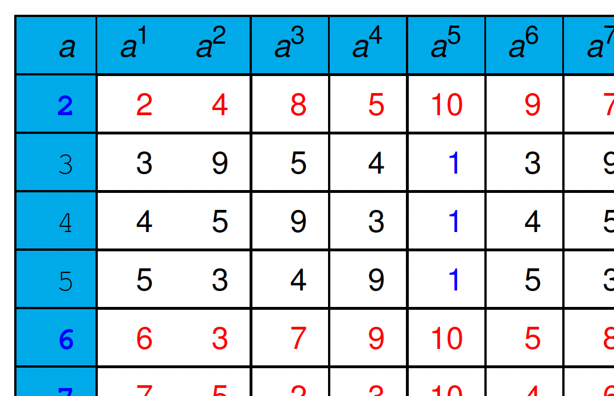

DADA2026:4-3
Defence against the Dark Arts
Fourth topic - Crypto - extra math slides
July, 2026
Hard and easy...

Curve y^{2}=x^{3}+x+1\bmod23 does not “look” nice


| P+Q | Gradient \Delta | x coordinate x_{R} | y coordinate y_{R} | R |
|---|---|---|---|---|
| (3,10)+(9,7) | =\frac{-3}{6}=11 | =11^{2}-3-9=17 | =11(3-17)-10=20 | (17,20) |
| (4,0)+(7,11) | =\frac{11}{3}=19 | =19^{2}-4-7=5 | =19(4-5)-0=4 | (5,4) |
Abstract algebra concepts...
In crypto, we often work with finite, cyclic mathematical structures. These have been studied for centuries, and it is appropriate for us to know about the mathematical domain in which we must work.
I say must, because without knowing the hard facts/limits of the mathematical structures we must deal with, we have nothing (!)
Leonhard Euler (1707-1783)
 |
 |
Euler’s theorem - a generalization of Fermat’s

If N is any positive integer and a is any positive integer less than N with no divisors in common with N, then
{a^{\phi(N)}\bmod N=1}
where \phi(N) is the Euler phi (totient) function:
{\phi(N)=N(1-1/p_{1})\ldots(1-1/p_{m})}
and p_{1}, \ldots , p_{m} are all the prime numbers that divide evenly into N.
If N is a prime, then using the formula, we have
{\phi(N)=N(1-\frac{1}{N})=N(\frac{N-1}{N})=N-1}
We see that Fermat’s result is a special case of Euler’s:
{a^{\phi(N)}\bmod N=a^{N-1}\bmod N=1}
Special cases
Another special case needed for RSA comes when the modulus is a product of two (different) primes: N=pq. Then
{\phi(N)=N(1-\frac{1}{p})(1-\frac{1}{q})=(p-1)(q-1)}
and so we have
{a^{(p-1)(q-1)}\bmod pq=1}
(if a has no divisors in common with pq and p,q prime)
The table illustrates Euler’s theorem for N=15=3\times5, with
{\phi(15)=15(1-\frac{1}{3})(1-\frac{1}{5})=(3-1)(5-1)=8}
Notice here that a 1 is reached when the power is 8, but only for numbers with no divisors in common with 15.
Euler table for N=15, \phi(N)=8
| a | a^{2} | a^{3} | a^{4} | a^{5} | a^{6} | a^{7} | a^{8} | a^{9} | a^{10} | a^{11} | a^{12} | a^{13} | a^{14} |
|---|---|---|---|---|---|---|---|---|---|---|---|---|---|
| 2 | 4 | 8 | 1 | 2 | 4 | 8 | 1 | 2 | 4 | 8 | 1 | 2 | 4 |
| 3 | 9 | 12 | 6 | 3 | 9 | 12 | 6 | 3 | 9 | 12 | 6 | 3 | 9 |
| 4 | 1 | 4 | 1 | 4 | 1 | 4 | 1 | 4 | 1 | 4 | 1 | 4 | 1 |
| 5 | 10 | 5 | 10 | 5 | 10 | 5 | 10 | 5 | 10 | 5 | 10 | 5 | 10 |
| 6 | 6 | 6 | 6 | 6 | 6 | 6 | 6 | 6 | 6 | 6 | 6 | 6 | 6 |
| 7 | 4 | 13 | 1 | 7 | 4 | 13 | 1 | 7 | 4 | 13 | 1 | 7 | 4 |
| 8 | 4 | 2 | 1 | 8 | 4 | 2 | 1 | 8 | 4 | 2 | 1 | 8 | 4 |
| 9 | 6 | 9 | 6 | 9 | 6 | 9 | 6 | 9 | 6 | 9 | 6 | 9 | 6 |
| 10 | 10 | 10 | 10 | 10 | 10 | 10 | 10 | 10 | 10 | 10 | 10 | 10 | 10 |
| 11 | 1 | 11 | 1 | 11 | 1 | 11 | 1 | 11 | 1 | 11 | 1 | 11 | 1 |
| 12 | 9 | 3 | 6 | 12 | 9 | 3 | 6 | 12 | 9 | 3 | 6 | 12 | 9 |
| 13 | 4 | 7 | 1 | 13 | 4 | 7 | 1 | 13 | 4 | 7 | 1 | 13 | 4 |
| 14 | 1 | 14 | 1 | 14 | 1 | 14 | 1 | 14 | 1 | 14 | 1 | 14 | 1 |
{a^{x}\bmod N=a^{x\bmod\phi(N)}\bmod N}
a^{28}\bmod15=a^{28\bmod8}\bmod15=a^{4}\bmod15
Identifying quadratic residues 


Legendre: identifies the QR in \mathbb{Z}_{p}; a function of a and p:
(\mathbb{Z}_{p})
{\begin{array}{lllll} \left(\frac{a}{p}\right) & = & a^{\frac{p-1}{2}}\mod p & = & \left\{ \begin{array}{lll} 1 & & {\color{black}\mathrm{if}\,a\,\mathrm{is\,a\,QR}}\\ -1 & & {\color{black}\mathrm{if}\,a\,\mathrm{is\,not\,a\,QR}}\\ 0 & & {\color{blue}{\color{black}\mathrm{if}\,a=0\mod p}} \end{array}\right.\end{array}}
Jacobi: is a generalization of Legendre, extending it to \mathbb{Z}_{N} (composites).
(\mathbb{Z}_{N})
Easy to compute given it’s prime factorization. For example, given N=p\times q with p\neq q, then
{\left(\frac{a}{N}\right)=\left(\frac{a}{p}\right)\left(\frac{a}{q}\right)}
Given a and N, we can find the Jacobi symbol without knowing the factorization of N. From the Jacobi symbol, we can’t tell whether a is a QR, but no entry with -1 is a quadratic residue.
Complexity of basic arithmetic 
We often work with (cyclic) groups in \mathbb{Z}_{p} and \mathbb{Z}_{N} with very large p and N.
Computational complexity: the following basic arithmetic operations can be efficiently computed in \mathbb{Z}_{p} and \mathbb{Z}_{N}:
| Operations | Complexity |
|---|---|
| Addition | {\cal O}(m) |
| Multiplication | {\cal O}(m^{2}) |
| Inverse | {\cal O}(m^{2}) |
| Exponentiation | {\cal O}(m^{3}) |
Programming issues: Since our machines work with 32 or 64-bit integers, we have libraries such as the GMP (GNU Multiple Precision) library, and Java “BigInteger” classes.
CRT - the Chinese Remainder Theorem
CRT - the Chinese Remainder Theorem
{\begin{array}{ccl} x & = & 2\,\mathrm{mod}\,3\,\,\,\,\,\,\,\,\,\,\,\,\,(1)\\ x & = & 3\,\mathrm{mod}\,5\,\,\,\,\,\,\,\,\,\,\,\,\,(2)\\ x & = & 2\,\mathrm{mod}\,7\,\,\,\,\,\,\,\,\,\,\,\,\,(3) \end{array}}
From (1), we know that x=3n+2 for some n. Substituting this in (2) gives 3n=1\,\mathrm{mod}\,5 . This reduces to a simpler equation n=2\,\mathrm{mod}\,5 which is equivalent to n=5m+2 fo r some m. Substituting this back into x=3n+2 gives us x=15m+8. Substituting this in (3) gives 15m+8=2\,\mathrm{mod}\,7, or m=1\,\mathrm{mod}\,7, i.e. m=7o+1.
From this we can see that x=105o+23. Note that 105=\mathrm{lcm}(3,5,7) and the solutions are 23,128 (and so on).
Euclidean algorithm
To find the gcd of two
numbers (say 2394 and 154 ), use
the prime factorization:
{\begin{array}{rll} 2394 & = & 2*3*3*7*19\\ 154 & = & 2*7*11\\ \therefore\mathrm{gcd}(2394,154) & = & 2*7=14 \end{array}}
Unfortunately, it is not easy to find the prime factors of integers.
The gcd of two integers can
however be found by repeated application of division, using the
Euclidean algorithm. You repeatedly divide the divisor by the remainder
until the remainder is 0. The gcd is the last non-zero
remainder.
Example:
Extended Euclidean algorithm
If the \mathrm{gcd}(a,b)=r then there exist integers m and n so that ma+nb=r.
- We begin by dividing n by x, and as we carry out each step i of the Euclidean algorithm discovering the quotient q_{i}, we also calculate an extra number x_{i}. For the first two steps x_{0}=0 and x_{1}=1. For the following steps, calculate x_{i}=x_{i-2}-x_{i-1}q_{i-2}\,\mathrm{mod}\,n.
- If the last non-zero remainder occurs at step k, then if it is 1, x has an inverse: x_{k+2}.
The inverse of 15 modulo 26, showing the method
:
{\begin{array}{llllllll} 0:\,\,\, & 26 & = & 1*15+11 & \,\,\,\,\, & x_{0}=0\\ 1:\,\,\, & 15 & = & 1*11+4 & & x_{1}=1\\ 2:\,\,\, & 11 & = & 2*4+3 & & x_{2}=0-1*1\,\mathrm{mod}\,26 & = & 25\\ 3:\,\,\, & 4 & = & 1*3+1 & & x_{3}=1-25*1\,\mathrm{mod}\,26 & = & 2\\ 4:\,\,\, & 3 & = & 3*1+0 & & x_{4}=25-2*2\,\mathrm{mod}\,26 & = & 21\\ & & & & & x_{5}=2-21*1\,\mathrm{mod}\,26 & = & 7 \end{array}}
Easy problems in \mathbb{Z}_{N}
- Basic math:
-
Generating a random element, adding and multiplying elements, finding inverse, exponentiation.
- Jacobi:
-
Finding the Jacobi symbol.
Hard problems in \mathbb{Z}_{N}

- QR:
-
Testing if an element is a QR in \mathbb{Z}_{N}.
(Computing the Jacobi symbol cannot solve the problem).
- SQRT:
-
Computing the square root of a QR in \mathbb{Z}_{N}.
Provably as hard as factoring N.
Rabin cryptosystems based on this hardness.
- \phi(N):
-
Computing \phi(N) - Provably as hard as factoring N. If you can efficiently compute \phi(N), then you can also factor N.
- Roots:
-
Computing the e-th roots mod N when gcd(e,N)=1.
RSA cryptosystems based on this hardness.
- DL:
-
Discrete log problem With g being a generator of \mathbb{Z}_{N}^{*}, then
given x\in\mathbb{Z}_{N}^{*}, find an r such that x=g^{r}\bmod N.
- CDH:
-
Computational Diffie-Hellman problem With g being a generator of \mathbb{Z}_{N}^{*}, then given g^{a},g^{b}\in\mathbb{Z}_{N}^{*}, find g^{ab}\bmod N.
Bilinear maps/pairings

A (symmetric style) bilinear map is a pairing between two elements of a group to a second (same order) group: G\times G\rightarrow G_{T}. There are also (asymmetric) pairings like G_{1}\times G_{2}\rightarrow G_{T}.
Such a symmetric mapping (if it can be efficiently computed) can be used to solve DDH: z=ab iff e(g,g^{z})=e(g^{a},g^{b}). Originally this was the focus of bilinear maps in crypto, and this is why CDH is considered harder than DDH.
The other thing is that it can allow you to reduce the discrete log problem in G to a (perhaps simpler) discrete log problem in G_{T}: e(g,g^{a})=e(g,g)^{a}.
A little more on bilinear maps/pairings
| G\rightarrow |  |
G_{T}\rightarrow |  |
The groups G=\mathbb{Z}_{5}^{+} and G_{T}=\left\langle 3\right\rangle _{11}, with e(u,v)=3^{uv}(\bmod11):
{\begin{array}{lll} e(4,3) & = & 3^{12}\bmod11\\ & = & 9 \end{array}}
{\begin{array}{lll} e(4+4,3) & = & e(4,3)^{2}\\ & = & e(4,3)\times e(4,3)\\ & = & 3^{24}\bmod11\\ & = & 4\\ & = & e(4,3+3) \end{array}}
This is not too useful because groups like this tend to be invertible.
The big picture..

There are getting to be more uses of pairing based crypto, including IBE, simple encryption, signatures, and so on. Note that
{e(u^{a},v^{b})=e(u^{b},v^{a})}
(one for encryption, one for decryption).
In a talk by Boneh, the above diagram showed crypto history, from one-way functions, discrete logs, pairings, LWE (Learning with Errors), through to multilinear maps for indistinguishability obfuscation.
Presented as one-way functions 
- DL:
-
Discrete Logarithm: With prime p and an element g\in\mathbb{Z}_{p}^{*} of large order, f(x)=g^{x}\bmod p. It is linear: Given a\in\mathbb{Z}, f(x) and f(y), it is easy to compute f(ax) and f(x+y). Its one-wayness is essential for the Diffie-Hellman key exchange protocol and Elgamal public key systems.
- RSA:
-
Let e be an integer such that gcd(e,N)=1, f(x)=x^{e}\bmod N. Note that given the factorization of N, the function f can be inverted efficiently. The one-wayness property is essential for the RSA public key system.
- Rabin:
-
f(x)=x^{2}\bmod N This function is one-way if there is no efficient algorithm to factor N. The function can be inverted efficiently if the factorization of N is known. The one-wayness property is essential for Rabin’s scheme.
Summary 
- Multiplicative inverses may not exist in modulo arithmetic. For a modulus N and a number x, x^{-1} exists iff gcd(x,N)=1.
- CRT gives a mapping from \mathbb{Z}_{N} to \mathbb{Z}_{p}\times\mathbb{Z}_{q}.
- Some problems are easy in \mathbb{Z}_{p} but the same problems become difficult in \mathbb{Z}_{N} if the factorization of N is unknown.
- Some problems, in particular Discrete Log, are hard in both.
- Factorization and Discrete Log are the two main types of problems. Many cryptosystems depend on their “hardness”.